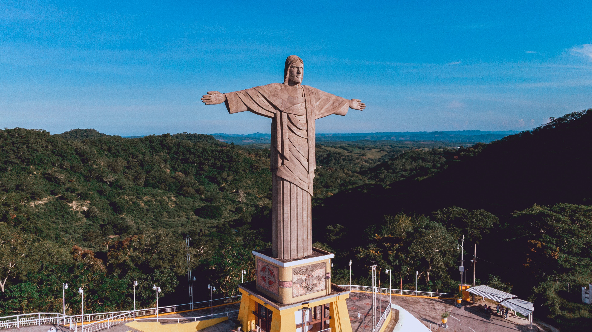

The Great Wall Of China:
The Great Wall of China is a series of fortifications that were built across the historical
northern borders of ancient Chinese states. It is the longest structure humans have ever built.
It is about 21,196 kilometers long, 9.1 metres (30 feet) wide and 15 metres high.

Chichén Itzá
Chichén Itzá, ruined ancient Maya city occupying an area of 4 square miles (10 square km) in
south-central Yucatán state, Mexico. It is thought to have been a religious, military, political,
and commercial centre that at its peak would have been home to 35,000 people.

Petra:
Petra is half-built, half-carved into the rock, and is surrounded by mountains riddled
with passages and gorges. It is one of the world's most famous archaeological sites,
where ancient Eastern traditions blend with Hellenistic architecture.

Collesseum:
It is also called the Flavian Amphitheatre. It is an elliptical structure made of stone, concrete, tuff,
and it stands four stories tall at its highest point. It measures 620 by 513 feet (189 by 156 metres)
and could hold as many as 50,000 spectators.The Colosseum was famously used for gladiatorial combat.

Christ the Redeemer
Christ the Redeemer is the largest art deco statue in the world. It is 98 feet tall
and the arms stretch to 92 feet wide.The statue weighs approximately 635 tonnes.Christ the Redeemer
is located in the Tijuca Forest National Forest, at the top of the Corcovado Mountain.

Machu Picchu
Machu Picchu , Ancient fortress city of the Incas in the Andes Mountains, south-central Peru.
Perched near Cuzco in a narrow saddle between two sharp peaks, at an elevation of 7,710 ft ,it escaped
detection by the Spaniards, and its existence was made known only in 1911 by U.S. explorer Hiram Bingham

Taj Mahal
The Taj Mahal is a perfect symmetrical planned building, with an emphasis of bilateral symmetry along
a central axis on which the main features are placed.The building material used is brick-in-lime
mortar veneered with red sandstone and marble and inlay work of precious/semi precious stones.
Top